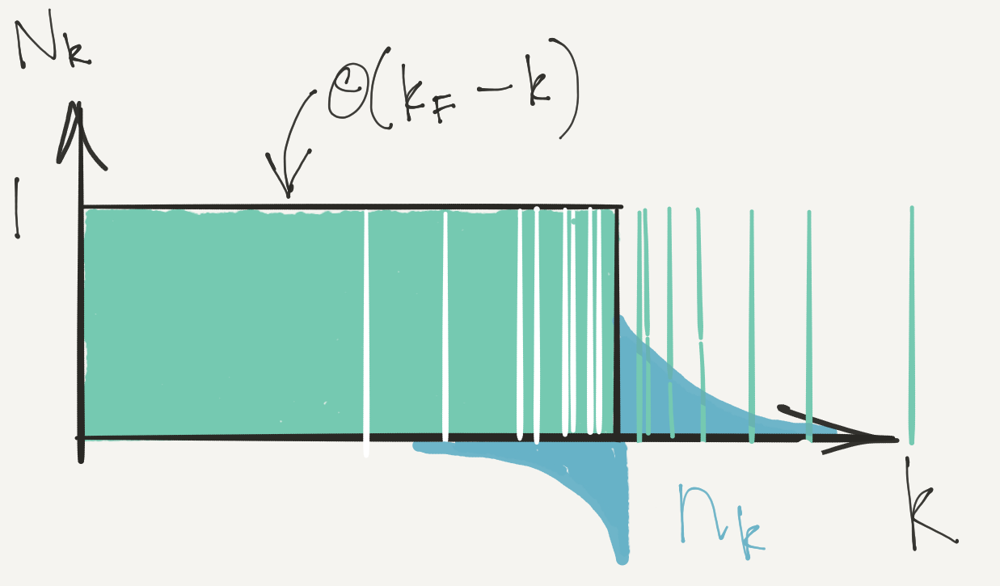
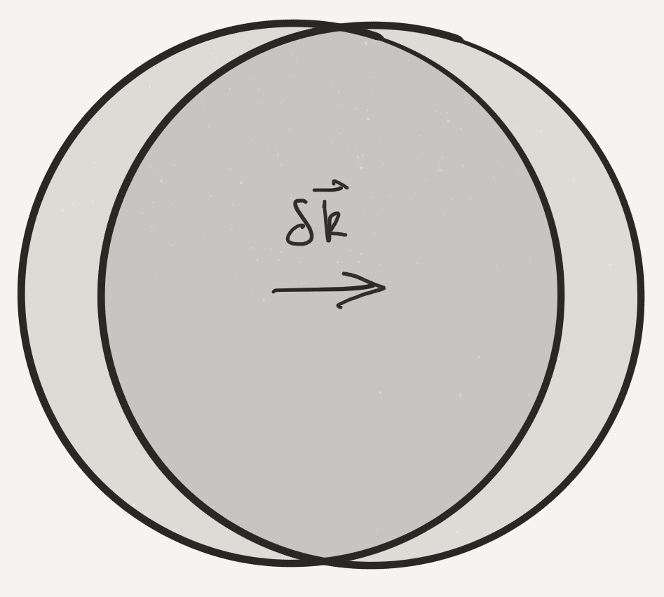
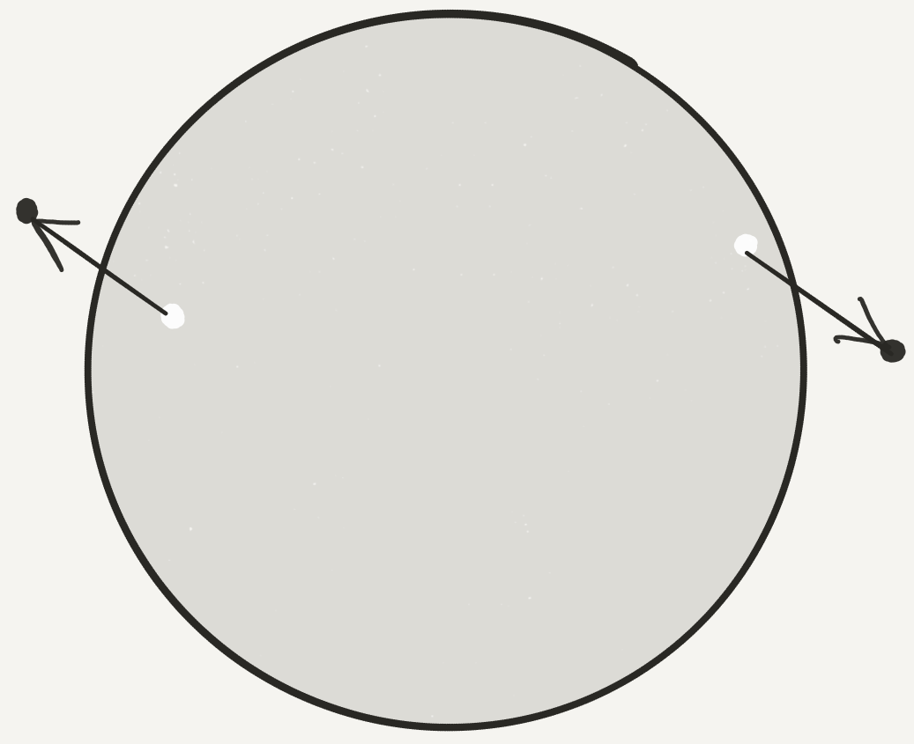
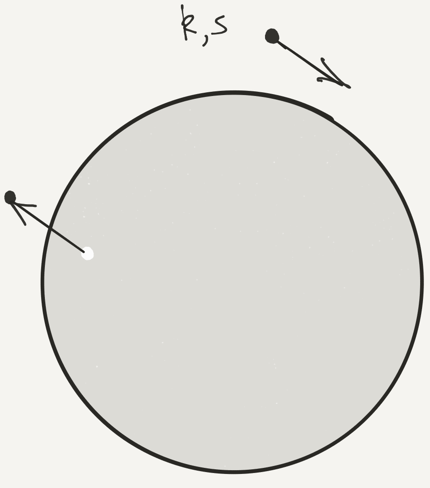
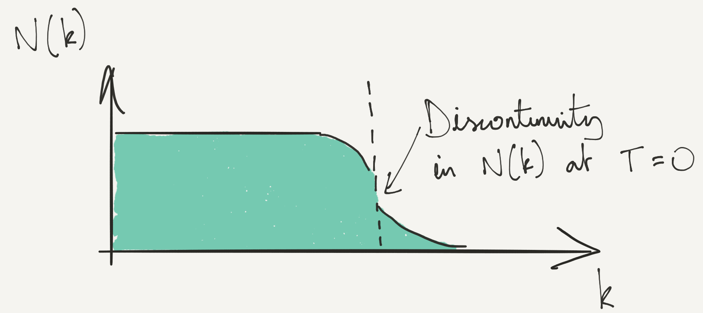
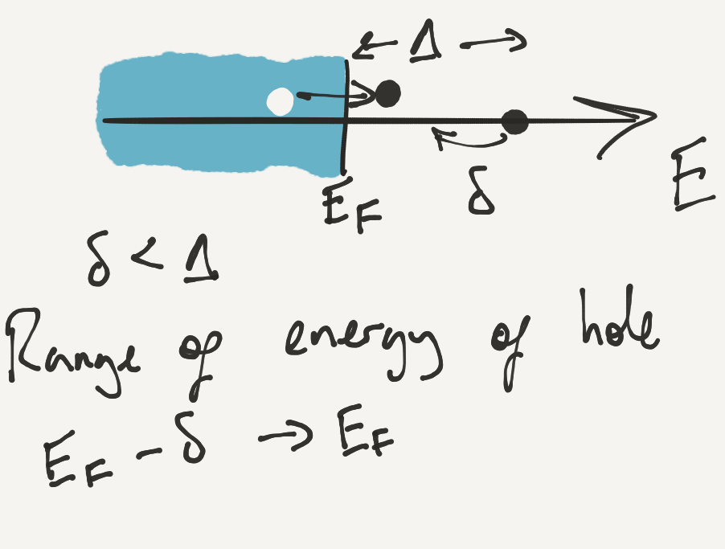

Fermi Gas
\[ \DeclareMathOperator{\tr}{tr} \DeclareMathOperator{\E}{\mathbb{E}} \]
A Fermi gas with weak interactions provides an example of one of the ‘standard models’ of condensed matter physics: Landau’s Fermi liquid theory.
Reading: Landau et al. (1980)
1 Weakly Interacting Fermi Gas
We are going to study the following simple model of a Fermi gas with short-ranged interactions
\[ H = \int d\mathbf{r}\left[ \sum_{s=\uparrow,\downarrow}\frac{1}{2m}\nabla\psi^\dagger_s\cdot\nabla\psi^{\vphantom{\dagger}}_s + U_0 \psi^\dagger_\uparrow\psi^\dagger_\downarrow\psi^{\vphantom{\dagger}}_\downarrow\psi^{\vphantom{\dagger}}_\uparrow\right]. \]
As with the Bose gas, it’s most convenient to work in momentum space
\[ H =\sum_{\mathbf{k},s} \epsilon(\mathbf{k})a^\dagger_{\mathbf{k},s}a^{\vphantom{\dagger}}_{\mathbf{k},s} + \overbrace{\frac{U_0}{V}\sum_{\mathbf{k}_1+\mathbf{k}_2=\mathbf{k}_3+\mathbf{k}_4} a^\dagger_{\mathbf{k}_1,\uparrow}a^\dagger_{\mathbf{k}_2,\downarrow}a^{\vphantom{\dagger}}_{\mathbf{k}_3,\downarrow}a^{\vphantom{\dagger}}_{\mathbf{k}_4,\uparrow}}^{\equiv H_\text{int}}, \]
with \(\epsilon(\mathbf{k})=\mathbf{k}^2/2m\), and \(V\) the volume. At \(U_0=0\) the eigenstates are of course the product states of single particle momentum states specified by the occupancies \(N_{s}(\mathbf{k}) = 0,1\). The ground state is the Fermi sphere of radius \(k_\text{F}\) in momentum space with \(N_{s}(\mathbf{k}) = \theta(k_F-\lvert{\mathbf{k}}\rvert)\). Low energy excited states will have \(N_{s}(\mathbf{k})=1\) for \(\lvert{\mathbf{k}}\rvert\ll k_\text{F}\) and \(N_{s}(\mathbf{k})=0\) for \(\lvert{\mathbf{k}}\rvert\gg k_\text{F}\). In perturbation theory we may still label the eigenstates by these occupation numbers even though the eigenstates are no longer occupation number eigenstates. Instead, we say that these labels give the occupation numbers of quasiparticles with fermionic statistics. The energy of the eigenstates can then be expressed in terms of the quasiparticle distribution.
Without interactions the energy of a state \(\lvert{\mathbf{N}}\rangle\) is
\[ E^{(0)}(\mathbf{N}) = \sum_{\mathbf{k},s} \epsilon(\mathbf{k})N_{s}(\mathbf{k}). \]
In the presence of interactions this function is no longer linear in the occupation numbers. The second order expansion of the energy in terms of the deviation of the occupancies from the ground state values is the key ingredient of Landau’s theory.
2 Perturbation Theory to Second Order
The standard expressions for the perturbed energy to second order in the perturbation are of course
\[ \begin{align} E^{(1)}(\mathbf{N}) &= \langle{\mathbf{N}}\rvert H_\text{int} \lvert \mathbf{N} \rangle\\ E^{(2)}(\mathbf{N}) &= \sum_{\mathbf{N}'\neq \mathbf N}\frac{\lvert{\langle{\mathbf{N'}}\rvert H_\text{int} \lvert \mathbf{N} \rangle}\rvert^2}{E^{(0)}(\mathbf{N})-E^{(0)}(\mathbf{N}')}. \end{align} \tag{1}\]
The first order correction is easily found to be
\[ E^{(1)}(\mathbf{N}) = \frac{U_0}{V} \sum_{\mathbf{k},\mathbf{k}'} N_{\uparrow}(\mathbf{k})N_{\downarrow}(\mathbf{k}') = \frac{U_0}{V}N_\uparrow N_\downarrow. \]
This is just the energy we found when we discussed the Stoner criterion in Lecture 6. For the second order correction we need the matrix element \(\langle{\mathbf{N}'}\rvert H_\text{int} \lvert \mathbf{N} \rangle\), which is nonzero if
\[ \begin{align} N'_{\mathbf{k}_1,\uparrow} = N_{\uparrow}(\mathbf{k}_1) + 1, \quad N'_{\downarrow}(\mathbf{k}_2) = N_{\downarrow}(\mathbf{k}_2) + 1\\ N'_{\downarrow}(\mathbf{k}_3) = N_{\downarrow}(\mathbf{k}_3) - 1, \quad N'_{\uparrow}(\mathbf{k}_4) = N_{\uparrow}(\mathbf{k}_4) - 1, \end{align} \]
for \(\mathbf{k}_i\) satisfying \(\mathbf{k}_1+\mathbf{k}_2=\mathbf{k}_3+\mathbf{k}_4\). In this case
\[ \langle{\mathbf{N}'}\rvert H_\text{int} \lvert \mathbf{N} \rangle = \frac{U_0}{V} \left(1-N_{\uparrow}(\mathbf{k}_1)\right)\left(1-N_{\downarrow}(\mathbf{k}_2)\right)N_{\downarrow}(\mathbf{k}_3)N_{\uparrow}(\mathbf{k}_4), \]
(ignoring any coinciding momenta) where the occupancies are either zero or one. In this way we end up with the second order correction
\[ E^{(2)}(\mathbf{N}) = \left(\frac{U_0}{V}\right)^2 \sum_{\mathbf{k}_1+\mathbf{k}_2=\mathbf{k}_3+\mathbf{k}_4}\frac{\left(1-N_{\uparrow}(\mathbf{k}_1)\right)\left(1-N_{\downarrow}(\mathbf{k}_2)\right)N_{\downarrow}(\mathbf{k}_3)N_{\uparrow}(\mathbf{k}_4)}{\epsilon(\mathbf{k}_3)+\epsilon(\mathbf{k}_4)-\epsilon(\mathbf{k}_1)-\epsilon(\mathbf{k}_2)}. \tag{2}\]
2.1 Landau \(f\) function
Evaluating Equation 2, even for the ground state, is a bit arduous on account of the three independent momentum sums. Fortunately, we are more interested in how the excitation energies are affected by interactions. This means we focus on the change in the occupation relative to the ground state, denoted by \(n_s(\mathbf{k})\) and defined through
\[ N_{s}(\mathbf{k}) = \theta(k_F-\lvert{\mathbf{k}}\rvert) + n_{s}(\mathbf{k}) \]
This might seem a bit odd given that \(N_{s}(\mathbf{k})=\pm 1\). You should think of this expansion in terms of the continuum limit, where the \(\mathbf{k}\) values become finely spaced. In this limit \(n_\mathbf{k}\) represents the mean deviation from the Fermi sphere in that region of \(\mathbf{k}\)-space.

The excitation energy above the ground state of an eigenstate labelled by occupancies \(N_\mathbf{k}\) can then be expanded in \(n_\mathbf{k}\)
\[ \Delta E = \sum_{\mathbf{k},s} \varepsilon_s(\mathbf{k})n_{s}(\mathbf{k}) + \frac{1}{2V}\sum_{\mathbf{k}, s,\mathbf{k}', s'} f_{s^{}s'}(\mathbf{k},\mathbf{k}')n_{s}(\mathbf{k})n_{s'}(\mathbf{k}'). \tag{3}\]
This expansion is the key idea in the theory of the Fermi liquid. Although we will calculate the quasiparticle energy \(\varepsilon_s(\mathbf{k})\) and interaction function \(f_{s^{}s'}(\mathbf{k},\mathbf{k}')\) using perturbation theory, Landau’s idea was that any interacting Fermi system could be described in similar terms, as long as the ground state does not change abruptly as we increase the interaction from zero (normally a thought experiment!). An example of an abrupt change would be a transition from liquid to solid (crystallization).
To first order in the interaction we have the not-so-interesting result
\[ \begin{align} \varepsilon_s(\mathbf{k}) &= \epsilon(\mathbf{k}) + \frac{U_0 N_{\bar s}}{V}+\cdots\\ f_{\uparrow\downarrow} &= f_{\downarrow\uparrow} = U_0+\cdots,\quad f_{\uparrow\uparrow}=f_{\downarrow\downarrow}=0+\cdots, \label{fermi_first} \end{align} \]
where the meaning of the \(\bar s\) is \(\bar\uparrow=\downarrow\), \(\bar\downarrow=\uparrow\). The second order contributions to the \(f\)-function are more interesting, however. For example
\[ \begin{align} f_{\uparrow\uparrow}(\mathbf{k},\mathbf{k}') = -\frac{U_0^2}{V}\left[\sum_{\mathbf{k}+\mathbf{k}_3=\mathbf{k}'+\mathbf{k}_2} \frac{N_{\downarrow}(\mathbf{k}_3)(1-N_{\downarrow}(\mathbf{k}_2))}{\epsilon(\mathbf{k})+\epsilon(\mathbf{k}_3)-\epsilon(\mathbf{k}')-\epsilon(\mathbf{k}_2)}\right.\nonumber\\ \left.+\sum_{\mathbf{k}'+\mathbf{k}_3=\mathbf{k}+\mathbf{k}_2}\frac{N_{\downarrow}(\mathbf{k}_3)(1-N_{\downarrow}(\mathbf{k}_2))}{\epsilon(\mathbf{k}')+\epsilon(\mathbf{k}_3)-\epsilon(\mathbf{k})-\epsilon(\mathbf{k}_2)}\right]. \end{align} \]
We will be interested in the low temperature limit, in which \(n_{s}(\mathbf{k})\) is non-zero only in a very narrow region of size \(k_\text{B} T\) around the Fermi surface. In this limit we can take the \(\lvert{\mathbf{k}}\rvert=\lvert{\mathbf{k}'}\rvert=k_\text{F}\), so that
\[ \begin{align} f_{\uparrow\uparrow}(\mathbf{k},\mathbf{k}') = -\frac{U_0^2}{V}\left[\sum_{\mathbf{k}+\mathbf{k}_3=\mathbf{k}'+\mathbf{k}_2} \frac{N(\mathbf{k}_3)(1-N(\mathbf{k}_2))}{\epsilon(\mathbf{k}_3)-\epsilon(\mathbf{k}_2)} +\sum_{\mathbf{k}'+\mathbf{k}_3=\mathbf{k}+\mathbf{k}_2}\frac{N(\mathbf{k}_3)(1-N(\mathbf{k}_2))}{\epsilon(\mathbf{k}_3)-\epsilon(\mathbf{k}_2)}\right]. \end{align} \]
In which we have assumed the state around which we expand is unpolarized, i.e. \(N_{s}(\mathbf{k})\) is independent of \(s\).
The expression for \(f_{\uparrow\downarrow}(\mathbf{k},\mathbf{k}')\) is more complicated
\[ \begin{align} f_{\uparrow\downarrow}(\mathbf{k},\mathbf{k}') = U_0 + f_{\uparrow\uparrow}(\mathbf{k},\mathbf{k}') +\frac{U_0^2}{V}\left[\sum_{\mathbf{k}+\mathbf{k}'=\mathbf{k}_3+\mathbf{k}_4}\frac{N(\mathbf{k}_3)N(\mathbf{k}_4)}{\epsilon(\mathbf{k}_3)+\epsilon(\mathbf{k}_4)-2E_\text{F}}\right.\nonumber\\ \left.\sum_{\mathbf{k}+\mathbf{k}'=\mathbf{k}_1+\mathbf{k}_2}\frac{(1-N(\mathbf{k}_1))(1-N(\mathbf{k}_2))}{2E_\text{F}-\epsilon(\mathbf{k}_1)-\epsilon(\mathbf{k}_2)}\right]. \end{align} \]
Evaluating these expressions is simpler than calculating Equation 2, as we have only one independent momentum. The new feature that comes at second order is a nontrivial dependence of \(f_{s^{}s'}(\mathbf{k},\mathbf{k}')\) on the angle between \(\mathbf{k}\) and \(\mathbf{k}'\).
It’s a bit fiddly to get at, but let’s work it out for the simpler case of \(f_{\uparrow\uparrow}(\mathbf{k},\mathbf{k}')\)!. The continuum limit is
\[ \begin{align} f_{\uparrow\uparrow}(\mathbf{k},\mathbf{k}') = \frac{U_0^2}{(2\pi)^3}\left[\int_{\substack{\lvert{\mathbf{k}_3}\rvert<k_\text{F},\lvert{\mathbf{k}_2}\rvert>k_\text{F}\\ \mathbf{k}+\mathbf{k}_3=\mathbf{k}'+\mathbf{k}_2 }} \frac{d\mathbf{k}_3}{\epsilon(\mathbf{k}_2)-\epsilon(\mathbf{k}_3)}\right.\nonumber\\ \left.+\int_{\substack{\lvert{\mathbf{k}_3}\rvert<k_\text{F},\lvert{\mathbf{k}_2}\rvert>k_\text{F}\\ \mathbf{k}'+\mathbf{k}_3=\mathbf{k}+\mathbf{k}_2 }}\frac{d\mathbf{k}_3}{\epsilon(\mathbf{k}_2)-\epsilon(\mathbf{k}_3)}\right]. \end{align} \tag{4}\]
So we need to find the integral
\[ \int_{\substack{\lvert{\mathbf{k}_3}\rvert<k_\text{F},\lvert{\mathbf{k}_2}\rvert>k_\text{F}\\ \mathbf{k}+\mathbf{k}_3=\mathbf{k}'+\mathbf{k}_2 }} \frac{d\mathbf{k}_3}{\epsilon(\mathbf{k}_2)-\epsilon(\mathbf{k}_3)}. \]
Note that the denominator can be written
\[ \epsilon(\mathbf{k}_2)-\epsilon(\mathbf{k}_3)= \frac{1}{2m}\left(\mathbf{k}_2+\mathbf{k}_3\right)\cdot\left(\mathbf{k}_2-\mathbf{k}_3\right) = \frac{1}{2m}\left(\mathbf{k}_2+\mathbf{k}_3\right)\cdot\left(\mathbf{k}-\mathbf{k}'\right), \]
where \(\mathbf{k}-\mathbf{k}'\) is fixed. Writing
\[ \mathbf{K} = \frac{1}{2}\left(\mathbf{k}_2+\mathbf{k}_3\right),\quad \mathbf{q}= \frac{1}{2}\left(\mathbf{k}_2-\mathbf{k}_3\right), \]

the denominator becomes
\[ \epsilon(\mathbf{k}_2)-\epsilon(\mathbf{k}_3) = \frac{2}{m}\mathbf{K}\cdot\mathbf{q}, \]
for fixed \(\mathbf{q}\). Thus, only the angle \(\theta\) between \(\mathbf{K}\) and \(\mathbf{q}\) enters the integral. The conditions \(\lvert{\mathbf{k}_2}\rvert>k_\text{F}\) and \(\lvert{\mathbf{k}_3}\rvert<k_\text{F}\) become
\[ \begin{align} \left(\mathbf{K}+\mathbf{q}\right)^2>k_\text{F}^2,\quad \left(\mathbf{K}-\mathbf{q}\right)^2<k_\text{F}^2, \end{align} \]
which gives the range of \(K_-(\theta)<\lvert{\mathbf{K}}\rvert<K_+(\theta)\)
\[ K_{\pm}(\theta)=\pm q\lvert{\cos\theta}\rvert+\sqrt{k_\text{F}^2-q^2\sin^2\theta}, \]
and we must have \(\theta<\pi/2\). In terms of these variables the integral becomes
\[ \begin{align} \int_{\substack{\lvert{\mathbf{k}_3}\rvert<k_\text{F},\lvert{\mathbf{k}_2}\rvert>k_\text{F}\\ \mathbf{k}+\mathbf{k}_3=\mathbf{k}'+\mathbf{k}_2 }} \frac{d\mathbf{k}_3}{\epsilon(\mathbf{k}_2)-\epsilon(\mathbf{k}_3)}&= \pi m\int_0^{\pi/2} d\theta \int_{K_-(\theta)}^{K_+(\theta)} \frac{K\sin\theta}{q\cos\theta} dK\nonumber\\ &=2\pi m\int_0^{\pi/2} d\theta \sin\theta \sqrt{k_\text{F}^2-q^2\sin^2\theta}. \end{align} \]
The other integral in Equation 4 is the same but in the interval \((\pi/2,\pi)\). Thus we have Finally
\[ \begin{align} f_{\uparrow\uparrow}(\mathbf{k},\mathbf{k}') &= \frac{U_0^2 m}{(2\pi)^2} \int_0^{\pi} d\theta \sin\theta \sqrt{k_\text{F}^2-q^2\sin^2\theta}\nonumber\\ &=\frac{U_0^2 m k_\text{F}}{(2\pi)^2}\left[1 - \frac{\cos^2\phi/2}{2\sin\phi/2}\log\left(\frac{1-\sin\phi/2}{1+\sin\phi/2}\right)\right]. \end{align} \]
Here \(\phi\) is the angle between \(\mathbf{k}\) and \(\mathbf{k}'\) i.e. \(\lvert{\mathbf{k}-\mathbf{k}'}\rvert=2q=2k_\text{F}\sin\phi/2\). We won’t go through the calculation of \(f_{\uparrow\downarrow}(\mathbf{k},\mathbf{k}')\), but just record the final answer.
The definition Equation 3 implied a certain quantization axis for spin. To write things in an invariant way, we should think of the occupation number \(N(\mathbf{k})\) as a \(2\times 2\) matrix that can describe an arbitrary spin orientation, with elements
\[ \mathsf{N}(\mathbf{k})=\begin{pmatrix} N_{\uparrow\uparrow}(\mathbf{k}) & N_{\uparrow\downarrow}(\mathbf{k}) \\ N_{\downarrow\uparrow}(\mathbf{k}) & N_{\downarrow\downarrow}(\mathbf{k}). \end{pmatrix} \]
The \(f\)-function then has four spin indices
\[ \frac{1}{2V}\sum_{\mathbf{k}, s_1,s_2,\mathbf{k}', s_3,s_4} f_{s_1s_2,s_3s_4}(\mathbf{k},\mathbf{k}')n_{s_1s_2}(\mathbf{k})n_{s_3s_4}(\mathbf{k}'), \]
with
\[ \begin{align} f_{s_1s_2,s_3s_4}(\mathbf{k},\mathbf{k}') = \frac{U_0}{2}\left[\left(1+ \frac{mU_0 k_\text{F}}{2\pi^2}\left[2+\frac{\cos\phi}{2\sin\phi/2}\log\frac{1+\sin\phi/2}{1-\sin\phi/2}\right]\right)\delta_{s_1s_3}\delta_{s_2s_4}\right.\nonumber\\ \left.\left(1+ \frac{mU_0 k_\text{F}}{2\pi^2}\left[1-\frac{1}{2}\sin\phi/2\log\frac{1+\sin\phi/2}{1-\sin\phi/2}\right]\right)\boldsymbol{\sigma}_{s_1s_3}\cdot\boldsymbol{\sigma}_{s_2s_4}\right] \end{align} \tag{5}\]
2.2 Quasiparticle energy \(\varepsilon_s(\mathbf{k})\)
So far we haven’t had much to say about the quasiparticle energy \(\varepsilon_s(\mathbf{k})\) introduced in Equation 3. Evaluating the second order correction is going to be difficult, as it will involve two momentum integrations instead of one. What can we say on general grounds? We expect that
\[ \varepsilon_s(\mathbf{k}) - E_\text{F} = v_\text{F}(\lvert{\mathbf{k}}\rvert-k_\text{F}). \tag{7}\]
The Fermi velocity \(v_\text{F}\) defined by this expression may be altered by the interactions, allowing us to define an effective mass
\[ m_* = \frac{k_\text{F}}{v_\text{F}}. \tag{8}\]
Fortunately, we can get at this quantity using the results we already have, thanks to the following sneaky trick (due to Landau). If we increment the momentum of each quasiparticle by a small amount \(\delta\mathbf{k}\), we can compute the new energy using our energy functional Equation 3, along with a new distribution function

\[ \begin{align} N_s(\mathbf{k}-\delta\mathbf{k}) &=\theta(k_F-\lvert{\mathbf{k}-\delta\mathbf{k}}\rvert) + n_{s}(\mathbf{k}-\delta\mathbf{k})+\cdots\nonumber\\ &=\theta(k_F-\lvert{\mathbf{k}}\rvert) + n_s(\mathbf{k}) + \delta(k_F-\lvert{\mathbf{k}}\rvert)\hat{\mathbf{k}}\cdot\delta\mathbf{k}- \delta\mathbf{k}\nabla_\mathbf{k}n_{s}(\mathbf{k})+\cdots. \end{align} \]
Treating the last three terms as \(n_s(\mathbf{k})\), our excitation energy changes to first order in \(\delta\mathbf{k}\) by an amount
\[ \begin{align} \Delta E &= \sum_{\mathbf{k},s} n_{s}(\mathbf{k})\delta\mathbf{k}\cdot\nabla_\mathbf{k}\varepsilon_s(\mathbf{k}) \nonumber\\ &+\frac{1}{V}\sum_{\mathbf{k}, s,\mathbf{k}', s'} f_{s^{}s'}(\mathbf{k},\mathbf{k}')n_{s}(\mathbf{k})\left[\delta(k_F-\lvert{\mathbf{k}'}\rvert)\hat{\mathbf{k}}'\cdot\delta\mathbf{k}- \nabla_{\mathbf{k}'}n_{s'}(\mathbf{k}')\cdot\delta\mathbf{k}\right]. \end{align} \]
(In the first term I have integrated by parts.) On grounds of Galilean invariance, however, we also know that this is
\[ \Delta E = \frac{\mathbf{P}}{m}\cdot\delta\mathbf{k}, \tag{9}\]
where the total momentum \(\mathbf{P}\) can be written
\[ \mathbf{P} = \sum_{\mathbf{k},s} \mathbf{k}n_{s}(\mathbf{k}). \]
If Equation 9 holds for all \(n_s(\mathbf{k})\) and \(\delta\mathbf{k}\), we have (ignoring second order in \(n_s(\mathbf{k})\))
\[ \frac{\mathbf{k}}{m} = \nabla_\mathbf{k}\varepsilon_s(\mathbf{k}) + \sum_{s'}\int f_{s^{}s'}(\mathbf{k},\mathbf{k}')\delta(k_F-\lvert{\mathbf{k}'}\rvert)\hat{\mathbf{k}}' \frac{d\mathbf{k}'}{(2\pi)^3}. \]
Restricting ourselves to momenta close to the Fermi surface, and using our definitions Equation 6, Equation 7 and Equation 8 gives the relation
\[ \frac{\mathbf{k}}{m} = \frac{\mathbf{k}}{m_*} +\frac{1}{m} \int F(\phi) \mathbf{k}' \frac{d\Omega_{\mathbf{k}'}}{4\pi}. \]
If we write \(\mathbf{k}'=\cos\phi \mathbf{k}+ \sin\phi \mathbf{k}_\perp\), with \(\mathbf{k}_\perp\cdot\mathbf{k}=0\), this gives Landau’s famous result
\[ \frac{1}{m} = \frac{1}{m_*} +\frac{1}{m} \int F(\phi) \cos\phi \frac{\sin\phi d\phi}{2}. \]
For the \(F(\phi)\) that we found in Equation 5 from second order perturbation theory, this gives the effective mass correction
\[ \frac{m_*}{m} = 1 + \frac{1}{30\pi^4}(7\log 2 - 1)\left(mU_0k_\text{F}\right)^2+\cdots. \]
(Use the substitution \(u=\sin\phi/2\) to do the integral.) Again, the point is not the value that we’ve obtained, but the argument we used to do so. In systems with strong interactions it’s possible for the effective mass to be very different from the bare mass: in the heavy fermion materials \(m_*/m\) can approach 1000! Despite being so far from the noninteracting limit, Landau’s picture of fermionic quasiparticles still applies.
3 Eigenstates in Perturbation Theory: What is a Quasiparticle?
So far we’ve focused on the energies of the excited states of the gas. But what do these quasiparticle states look like? In perturbation theory at least, we can see fairly explicitly. At first order we have
\[ \lvert{\mathbf{N}^{(1)}}\rangle = \sum_{\mathbf{N}'\neq \mathbf N}\frac{\langle{\mathbf{N'}}\rvert H_\text{int} \lvert \mathbf{N} \rangle}{E^{(0)}(\mathbf{N})-E^{(0)}(\mathbf{N}')}\lvert{\mathbf{N}'}\rangle. \]
Let’s consider the Fermi sea ground state \(\lvert{\text{FS}}\rangle\). What states can appear in the above sum in this case? The only possibility is that the interaction creates two particle-hole pairs out of the Fermi sea, with total momentum zero.

\[ \lvert{0}\rangle=\lvert{\text{FS}}\rangle+\text{two particle-hole pair states}+\cdots \]
What about an excited state? Consider the state
\[ a^\dagger_{\mathbf{k},s}\lvert{\text{FS}}\rangle, \]
having momentum \(\mathbf{k}\) and spin \(s\). When the interactions are switched on, this state will be modified to a state we’ll denote \(\lvert{\mathbf{k},s}\rangle\). At first order, two kinds of states can contribute to the modifed state:
- States with a pair of particle-hole pairs, as before, but with the extra particle at \(\mathbf{k}\). The coefficients of these states are the same as for the corresponding states in the correction for \(\lvert{0}\rangle\), as you should check.
- States with a single particle-hole pair and with the extra particle moved from \(\mathbf{k}\) to another momentum.

Let’s compare \(\lvert{\mathbf{k},s}\rangle\) with \(a^\dagger_{\mathbf{k},s}\lvert{0}\rangle\), the state obtained by creating a particle in the exact ground state of the problem. In first order perturbation theory, \(\lvert{0}\rangle\) includes the first kind of state above (2 particle-hole pair states). The states only differ because of the contribution of the second kind. To first order, the single quasiparticle state is therefore
\[ \begin{align} \lvert{\mathbf{k},s}\rangle &= \sqrt{\frac{z_k}{\langle{0}\rvert a^{\vphantom{\dagger}}_{\mathbf{k},s}a^\dagger_{\mathbf{k},s} \lvert 0 \rangle}}a^\dagger_{\mathbf{k},s}\lvert{0}\rangle \nonumber\\ &\qquad + \frac{U_0}{V}\sum_{\substack{\mathbf{k}_1+\mathbf{k}_2=\mathbf{k}_3+\mathbf{k}\\ s'}}\frac{a^\dagger_{\mathbf{k}_1,s}a^\dagger_{\mathbf{k}_2,s'}a^{\vphantom{\dagger}}_{\mathbf{k}_3,s'}\lvert{\text{FS}}\rangle}{\epsilon(\mathbf{k}_1)+\epsilon(\mathbf{k}_2)-\epsilon(\mathbf{k}_3)-\epsilon(\mathbf{k})}, \end{align} \tag{10}\]
where \(\sqrt{z_k}\) is a normalization factor. As we go to successively higher orders of perturbation theory, the quasiparticle state is ‘dressed’ with more particle-hole pairs. The quasiparticle retains the conserved quantum numbers (momentum and spin in this case) of the fermions of the noninteracting theory.
Normalizing Equation 10 gives
\[ z_\mathbf{k}= 1 - \left(\frac{U_0}{V}\right)^2\sum_{\substack{\mathbf{k}_1+\mathbf{k}_2=\mathbf{k}_3+\mathbf{k}\\\lvert{\mathbf{k}_3}\rvert<k_\text{F},\lvert{\mathbf{k}_2}\rvert,\lvert{\mathbf{k}_1}\rvert>k_\text{F}\\ s'}}\frac{1}{\left[\epsilon(\mathbf{k}_1)+\epsilon(\mathbf{k}_2)-\epsilon(\mathbf{k}_3)-\epsilon(\mathbf{k})\right]^2}+\cdots. \tag{11}\]
This quantity can be interpreted in terms of the overlap of the single quasiparticle state \(\lvert{\mathbf{k},s}\rangle\) with \(a^\dagger_{s,\mathbf{k}}\lvert{0}\rangle\).
\[ z_\mathbf{k}= \frac{\lvert{\langle{\mathbf{k},s}\rvert a^\dagger_{\mathbf{k},s} \lvert 0 \rangle}\rvert^2}{\langle{0}\rvert a^{\vphantom{\dagger}}_{\mathbf{k},s}a^\dagger_{\mathbf{k},s} \lvert 0 \rangle} \]
A finite overlap – evaluated for quasiparticles at the Fermi surface – is a requirement for the Fermi liquid picture to hold. If it were to vanish, any resemblance of the quasiparticle to a free fermion would disappear with it!
Obviously evaluating the integrals in Equation 11 is a challenge involving a double integral over momentum, but I have it on good authority (see Abrikosov, Gorkov, and Dzyaloshinski (2012), though they don’t give the details) that the answer is
\[ z_{\lvert{\mathbf{k}}\rvert=k_\text{F}} = 1 - \frac{(mUk_\text{F})^2}{8\pi^4}\left[\log 2 + \frac{1}{3}\right] \]
This is also the occupation number of the original fermions \(\langle{0}\rvert a^\dagger_{\mathbf{k},s}a^{\vphantom{\dagger}}_{\mathbf{k},s} \lvert 0 \rangle\) (not the quasiparticles!) just below the Fermi surface in the ground state (see Problem Set 3. There is a corresponding result just above. Even with interactions, there is a finite step in the distribution function at the Fermi surface.

4 Collisions
The picture we have developed so far of eigenstates labelled by quasiparticle occupations is actually a bit of an oversimplification. When we apply the second order perturbation theory formula Equation 1 we have to omit degenerate states. It isn’t really enough to insist that the occupancies differ \(\mathbf{N}'\neq \mathbf N\), because many states with different occupancies have the same energy in the thermodynamic limit. From a time-dependent point of view, the interaction can cause transitions between these states, leading to the quasiparticle distribution changing over time. The rate of these transitions can be described by the Fermi golden rule.
\[ \Gamma_{\mathbf{N}\to\mathbf{N'}} = 2\pi \lvert{\langle{\mathbf{N'}}\rvert H_\text{int} \lvert \mathbf{N} \rangle}\rvert^2 \delta(E(\mathbf{N})-E(\mathbf{N}')) \]
By considering the volume of phase space available for the scattering of a quasiparticle of energy \(\Delta\) above the Fermi surface, you should be able to argue that the total rate, obtained by integrating over all possible final states, varies like \(\Delta^2\). This means that at low energy (or temperature) such scattering is ineffective and the Landau picture holds.
